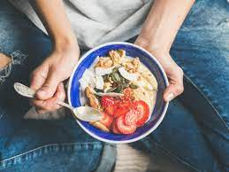
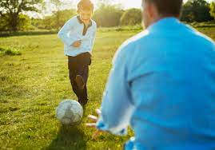

Get off to the best possible start on the weight loss plan with these 5 diet and exercise tips.
1. Do Not Skip Breakfast

Skipping breakfast will not help you lose weight. You could miss out on essential nutrients and you may end up snacking more throughout the day because you feel hungry.
2. Eat Regular Meals

Eating at regular times during the day helps burn calories at a faster rate. It also reduces the temptation to snack on foods high in fat and sugar.
3.Get More Active

Being active is key to losing weight and keeping it off. As well as providing lots of health benefits, exercise can help burn off the excess calories you cannot lose through diet alone.
4.Drink Plenty of Water

Water is a healthy and cheap choice for quenching your thirst at any time. It has no calories and contains no sugars that can damage teeth. People sometimes confuse thirst with hunger. You can end up consuming extra calories when a glass of water is really what you need.
5. Eat High Fibre Foods

Foods containing lots of fibre can help keep you feeling full, which is perfect for losing weight. Fibre is only found in food from plants, such as fruit and veg, oats, wholegrain bread, brown rice and pasta, and beans, peas and lentils.